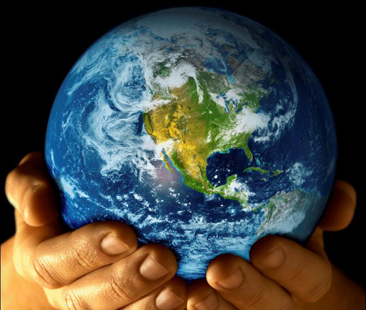
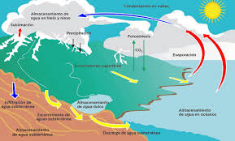
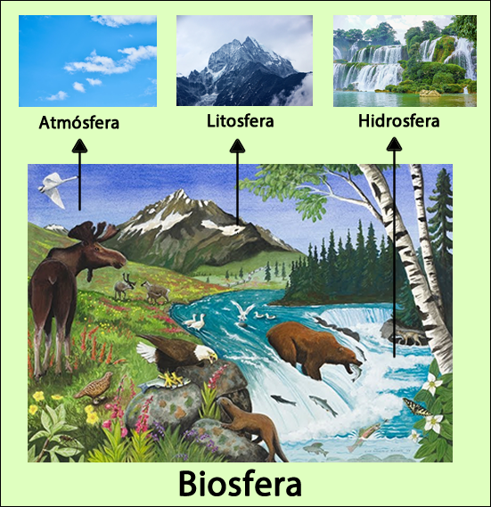

<!DOCTYPE html>
<html lang="es">
<head>
    <meta charset="UTF-8">
    <meta name="viewport" content="width=device-width, initial-scale=1.0">
    <title>Fase 1 - Principios Básicos</title>
    <link rel="stylesheet" href="estilos.css">
</head>
<body>
    <header>
        <h1>Fase 1</h1>
        <p>Principios Básicos de la Naturaleza</p>
    </header>

    <nav>
        <a href="index.html">Inicio</a>
        <a href="unidad1.html">Fase 1</a>
        <a href="unidad2.html">Fase 2</a>
        <a href="recursos.html">Recursos</a>
        <a href="bibliografia.html">Bibliografía</a>
    </nav>

    <div class="container">
        <section>
            <h2>CAPÍTULO 1. EL PLANETA TIERRA COMO ECOSISTEMA</h2>
            <p>La Tierra se formó aproximadamente hace 4.550 millones de años a partir de la nebulosa protosolar,
			junto con el Sol y los demás planetas del Sistema Solar (Colebtook Michael, 2006). La Tierra ocupa
			el cuarto lugar en tamaño de los planetas del sistema solar y es el tercero en orden de distancia con
			respecto al Sol.
			Los rasgos más sobresalientes de la Tierra son los siguientes:
			<ul>
			<li>Es el único lugar del universo donde se ha confirmado hasta ahora que existe vida.</li>
			<li>Ha evolucionado mediante procesos geológicos y biológicos.</li>
			<li>Su superficie externa se divide en litósfera e hidrósfera, donde la litósfera está fragmentada
			en una serie de placas que se desplazan sol:Jre el manto terrestre y se sitúan principalmente en
			el hemisferio norte. La hidrósfera está constituida principalmente por los océanos.</li>
			<li>Su interior permanece activo, con una gmesa capa de materiales fundidos y un núcleo rico en
			hierro que genera un campo magnético.</li>
			</ul>
			
			</p>
			
			<h2>¿Qué es el planeta Tierra?</h2>
			<p>El primer principio básico de la naturaleza establece que la Tierra es un ecosistema o sistema viviente 
			caracterizado por ser infinito, en homeostasis y sustentable .En 1972 la tripulación del Apolo 17 pudo 
			fotografiar por primera vez a  nuestro planeta desde el espacio.</p>
			
			<h2>La Tierra es un sistema viviente </h2>
			<p>La Tierra, llamada también Gaia, es un sistema viviente o ecosistema por sí misma y esta característica 
			está definida por la interacción de los diversos ecosistemas acuáticos y terrestres  que la integran 
			(Margulis, 1998) y que al evolucionar mediante procesos geoquímicos (abióticos) y biológicos (bióticos) 
			determinaron las condiciones iniciales apropiadas para el inicio de la vida y la posterior consolidación 
			de la biosfera. (Colebrook Michael, 2006.) </p> 
			
			<h2>La Tierra es finita en espacio, recursos y sustentabilidad</h2>
			<p>Asimismo, la tierra, a pesar de su inmensidad riqueza de recursos se caracteriza por ser finita no sólo en su dimensión o tamaño. 12. 756.3 km (diámetro de la Tierra), 
			sino también en su espacio y recursos disponibles para el hombre. La Tierra también llamada el ··planeta azul ·· por el color azul que la caracteriza en su superficie 
			está cubierta en un 70% por la hidrosfera (1.300 millones de kilómetros cúbicos de agua) donde 97% son océanos (agua salada). 2% hielos glaciares de las zonas 
			polares y más altas de las montañas (28.3 millones de km'). y que, a pesar de ser agua dulce, no está disponible ni accesible al ser humano. Solamente 1 % (8.1 
			millones de km3) de toda el agua presente en el planeta es agua dulce. accesible y disponible para el consumo de los seres vivos. Actualmente. la población mundial 
			consume l5% de agua dulce disponible
			(Lind n. 2000), el 30% restante es la litosfera (suelo) o corteza terrestre,
			donde 30% corresponde a las áreas polares. Desiertos y montañas. que no son aprovechables por el ser humano: 32% es área de bosque: 25% pastizales: y del 11 % de 
			la superficie continental. el ser humano ha modificado el uso del suelo de áreas naturales a áreas agropecuarias y solamente 2% es ocupada por asentamientos humanos 
			(ciudades). Igualmente, los recursos de la Tierra son finitos con base en su disponibilidad y accesibilidad, y de acuerdo con esta particularidad podemos clasificar los 
			recursos (energía y materia) presentes en
			la Tierra en recursos permanentes o inagotables, recursos agotables o no renovables y en recursos renovables. Los recursos s permanentes son inagotables en la escala 
			de tiempo humano, aunque puede
			haber variación e n la distribución espacial y temporal del recurso (energía solar, vientos, mareas y suelo). Los recursos agotables o no renovables existen en la 
			Tierra en una cantidad finita o determinada.
			Si no se usan estos recursos de una manera racional y eficiente se agotarán, ya que no se forman más en la naturaleza. como los recursos fósiles (carbón y 
			petróleo), o por que se forman a una tasa inferior a la de degradación o destrucción. como por ejemplo el suelo. el cual es un recurso renovable, pero por su 
			lento proceso de formación se considera un recurso agotable. ·Los recursos renovables son aquellos que se generan y conservan por medio de procesos 
			bioquímicos que se producen en los ciclos de la vida como el caso de del oxígeno y del agua. Los recursos renovables son aquellos que se generan y 
			conservan por medio de procesos bioquímicos que se producen en los diferentes ciclos de la vida como el caso de del oxígeno. del agua. del carbono. del 
			nitrógeno y los seres vivos (plantas y animales)
			vía el proceso de reproducción.
			Estos recursos pueden agotarse o convertirse en factores limitantes cuando las tasas de consumo y contaminación rebasan la tasa de velocidad de ciclado por 
			el cual se conservan y purifican. Aun la atmósfera. que es la capa gaseosa que envuelve a la Tierra, es finita, tiene un espesor de 90 a 100 km.,
			Considerando dos aspectos fundamentales de la atmósfera y que son vitales para la biosfera, se puede deducir que su espesor es aún menor. ya que si 
			observarnos la capa de ozono, se distribuye entre los 25 y 45 km. dependiendo ele la latitud. El ozono ocupa 0.00006% de los gases de la atmósfera y es 
			importante ya que funciona como filtro de los rayos ultravioleta. que son letales para la biosfera. Mientras que el 95% la concentración de oxígeno se 
			encuentra en la troposfera (los primeros 10 km de espesor) este gas es para las especies aeróbicas. </p>
						
			<h2>La Tierra está en equilibrio u homeostasis </h2>
			<p>Otra particularidad que caracteriza a la Tierra como ecosistema es que la biosfera autorregula las condiciones del planeta (procesos geofísicos y geoquímicas) 
			para mantener estables o en equilibrio condiciones ta les como: la temperatura global de la superficie de la Tierra. la composición atmosférica y la salinidad 
			en el océano (Miller 1994). para hacer su entorno físico más estable y favorable para la vida. Esta estabilidad o equilibrio es definida por la Hipótesis de. Gaia
			como homeostasis (Margulis. 1998: Miller. 1994)
			No obstante que las condiciones del entorno nunca son constantes. sino que se caracterizan por una variabilidad de hora a hora el día a día, de temporada a 
			temporada y de año a año. el ecosistema tiende a ser estable o estar en homeostasis por funcionar en un rango de condiciones o rango en tolerancia y por lo 
			tanto en un equilibrio dinámico (Chiras, l99l; Miller. 1994). También. esta condición de homeotasis no significa una estabilidad constante o estable equilibrio 
			como una característica fundamental de los ecosistemas, ya que la naturaleza tiende a desestabilizarlos vía competencia intraespecífica e interespecífica por 
			espacio y recursos, interacciones de presa depredador. limitación de recursos y disturbios entre otros factores. por lo que los ecosistemas tienden a ser 
			estables o mantener su equilibrio u homeostasis por desarrollar
			mecanismos de restablecimiento ta les como: inercia o resiliencia. tolerancia y resistencia (Chiras, 1991).
			Chiras (1 991) indica que la diversidad de especies (biodiversidad) es la que mantiene la estabilidad del ecosistema e incrementa su resiliencia. ·y este autor 
			agrega que asimismo se puede percibir esta condición de equilibrio u homeostasis en el sistema ampliando
			o incrementando la escala espacial de observación donde. a nivel
			del paisaje. la resolución varia de heterogéneo a homogéneo lo que
			permite distribuir el riesgo de desequilibrio.</p>
			
		<h2>Estructura y su funcionamiento de la Tierra </h2>
			<p>El segundo principio básico de la Naturaleza establece que la Tierra es un sistema viviente. Constituido por dos subsistemas: subsistema físico ecosfera y 
			subsistema biológico. </p>
				
		<h2>Subsistema físico </h2>
			<p>El subsistema físico está integrado por la atmósfera (aire), la hidrosfera (agua) y la litosfera (suelo). La estructura de la atmósfera, que es la capa de gases 
			que envuelve a la Tierrá
			y se compone principalmente de nitrógeno (78%). oxígeno (21 %),
			dióxido de carbono (0.033%), así como vapor de agua y otros gases
			en menor concentración.
			La atmósfera es una cubierta protectora de la Tierra, sin ella la temperatura terrestre alcanzaría más de 75 º C durante el día y menos de 130 ºC bajo cero 
			durante Ja noche. La atmósfera protege la superficie de la Tierra de la radiación solar de alta energía (ultravioleta, rayos gamma y rayos X), que es dañina 
			para los seres vivos, mientras que deja pasar radiación menos energética (radiación visible,rayos IR, etc.), que es esencial en diversos procesos para los seres 
			vivos, como el efecto invernadero 
			y la fotosíntesis. El vapor de agua. el C01 y otros gases como óxidos de nitrógeno, son conocidos como gases de efecto invernadero. ya que absorben la 
			radiación infrarroja (calor) que refleja la tierra, de esta forma evitan que el planeta se congele durante las noches. En este sentido la atmósfera actúa como
			una cubierta térmica. que asemeja un invernadero.
			En la atmósfera también se encuentra presente el ozono,
			el se concentra en la estratósfera y sirve como filtro natural de la radiación ultravioleta proveniente del Sol. protegiendo así a los seres vivos de los daños de 
			este tipo de radiación. Asimismo.La atmósfera representa el principal depósito del oxígeno. gas que es vital para la respiración de los organismos aeróbicos. 
			Las variaciones atmosféricas o fenómenos meteorológicos, que ocurren casi exclusivamente en la parte baja de la atmósfera. llamada troposfera. 
			redisuibuyen el calor comectivamente. y junto con
			los gases de efecto invernadero mantienen la temperatura promedio de la Tierra (15 'C). La hidrosfera es el agua en estado líquido que cubre a la Tierra. Está 
			integrada por los mares,océanos. lagos. ríos y otros cuerpos de agua superficiales y subterráneos, además del agua en estado sólido o congelada en los 
			casquetes polares. los glaciares y el agua en estado gaseoso o vapor. Gotas de lluvia y cristales de hielo presentes en la atmósfera. El agua es importante 
			porque es un elemento esencial para la vida y constituyente de los organismos vivos. Otro factor importante de la hidrosfera son las corrientes oceánicas. que 
			contribuyen en la determinación del clima (global y regional), al distribuir la energía calorífica de la región ecuatorial hacia las regiones polares. Sin esta 
			redistribución de energía calorífica realizada por la interacción entre las corrientes oceánicas y atmosféricas los climas de las diferentes regiones del planeta 
			serían extremosos, es decir, las temperaturas de las regiones tropicales serían muy superiores a las temperaturas de las regiones polares. La litosfera es la 
			porción sólida de la corteza terrestre, está formada por una compleja muestra de materiales inorgánicos (arena, limo y arcilla, aire y agua) y materia orgánica.
			En este subsistema físico se encuentran las sustancias inorgánicas (aire, agua, suelo, la luz, la temperatura), elementos y compuestos químicos inorgánicos 
			(elementos tales como:
			C, H, N, O, P, S; y compuestos como: CO, NH, CH, H, O, entre otros) y ocurren los procesos abióticos, por 
			ejemplo:intemperizacion,radiación, reflexión y flujo de energía. </p>

			

			<h2>Subsistema biológico </h2>
			<p>El subsistema biológico está integrado por los organismos productores. consumidores (primarios. secundarios y terciarios) y desintegradores. En este 
			subsistema se encuentran los materiales y sustancias orgánicas y ocun en las intrarrelaciones e interrelaciones
			bióticas entre organismos. Las interaccione y procesos abióticos-bióticos que ocurren entre los dos subsistemas constituyen
			un sistema ecológico llamado biosfera. En la biosfera, los seres vivos autorregulan estas interacciones e intercambios (de energía y materia) y se caracterizan 
			por ser complejas, de amplia escala
			temporal y am plia distribución espacial (Margulis. l 998: Miller. 1994; Ch iras, 199 1). Los intercambios de sustancias químicas en la biosfera ocurren vía 
			ciclos, llamados ciclos biogeoquímicos. los cuales se caracterizan por presentar dos fases: la fase ambiental. donde el elemento químico está en fonna 
			inorgánica en el suelo, agua y aire: y la fase orgánica, donde el elemento forma
			parte de los seres vivos (plantas y animales). En el capítulo 2 se estudiarán con detalle los principales ciclos biogeoquímicos.</p>
			
			

			<h2>CAPÍTULO 2. FLUJO DE ENERGÍA Y CICLOS BIOGEQUÍMICOS</h2>
			<p>El tercer principio básico de la naturaleza establece que la Tierra es
			un sistema abierto con respecto al flujo de energía.
			El Sol, no sólo es el centro del equilibrio gravitacional del sistema solar, sino también es la fuente externa de energía para la Tierra.
			lo que determina que en cuanto al flujo de energíala Tierra funcione
			como un sistema abierto (Al faro, etc al 2007). Con base en la Primera Ley de Termodinámica se puede validar que en la Tierra la única fuente de energía es el 
			Sol y que ésta no puede ser creada o destruida, no obstante, y a pesar del conocimiento y tecnologías generadas a lo largo del desarrollo humano. el ser humano no 
			puede crear o destruir la energía, sólo transformarla.</p>

			<h2>El equilibrio energético de la Tierra </h2>
			<p>Del total de la energía generada por el Sol, a nuestro planeta llega un 10% como radiación ultravioleta (rayos UV). 45% luz visible y 45% de radiación 
			infrarroja. Esta radiación incidente de diferentes formas y cantidades es suficiente y es el elemento climático más importante. ya que es la fuente de energía 
			de todos los demás procesos biológicos y físicos, condiciona los flujos de energía dentro de los ecosistemas y condiciona la intensidad y frecuencia de los 
			otros elementos del clima (Alfaro, et al., 2007). A partir del Sol se inicia el flujo de energía: la cual viaja a través del espacio y demora de siete a ocho 
			minutos en llegar a nuestro planeta, un 34% es inmediatamente reflejado por las nubes, sustancias químicas y polvo suspendido en la atmósfera y por la 
			superficie terrestre. Del 66% remanente, 42% calienta la atmósfera y la superficie del planeta, 22% evapora el agua y la circula a través de la ecostera y 1% 
			genera los vientos. El 1% restante es capturado por las plantas verdes u organismos fotosintéticos y es utilizado para producir compuestos orgánicos a través 
			del proceso de la fotosíntesis.</p>

			<h2>Pirámides ecológicas</h2>
			<p>El balance energético a lo largo de las cadenas tróficas es explicado por la Segunda Ley de Termodinámica, la cual indica que en cada transformación se 
			pierde o disipa energía en forma de calor o en otras palabras la energía inicial se degrada a otra forma de energía menos útil o menos con-centrada, como se 
			detalla en la figura 2.4. El porcentaje de energía transferida de un nivel trófico a otro, varía de 2% a 30%. dependiendo del número de niveles. de las especies 
			y del tipo de ecosistema. Con base en esta ley, el fujo de energía a través de los niveles tróficos de las cadenas alimenticias nos permite determinar las 
			pirámides ecológicas en términos de energía, biomasa y número de individuos, El término de pirámide denota la disminución de las variables: energía. 
			biomasa y número de individuos en el nivel inmediato superior. conforme se avanza a lo largo de la cadena trófica, como consecuencia de la energía perdida 
			por costos de mantenimiento metabólico de los individuos del nivel inferior. Por ejemplo, en lo que respecta a la biomasa total de la Tierra, 85% corresponde 
			a la vegetación, 10% a la fauna y solamente 5% corresponde a biomasa humana (Pidwirny,2006: Leckie, 1999 y World Population Information, 2006).</p>

			<h2>Ciclos biogequímicos </h2>
			<p>El cuarto principio establece que la Tierra es un sistema cerrado con respecto al flujo de materia. Lo cual denota que las sustancias químicas son cíclalas a 
			través de complejas vías entre los subsistemas físico y biológico y convertidas en formas útiles (nutrientes o nutrimentos) por una combinación de procesos 
			biológicos, geológicos y químicos que en conjunto son llamados ciclos biogeoquímicos. La figura 2.6 muestra el ciclado de sustancias químicas y el balance 
			energético. La importancia de los ciclos biogeoquímicos es que al ciclar las sustancias las renuevan, purifican y conservan y definen la productividad y 
			sustentabilidad de los ecosistemas. De acuerdo con Miller (1994) hay tres tipos de ciclos biogeoquímicos interconectados: gaseoso, sedimentario e 
			hidrológico.</p>

			<iframe width="560" height="315" src="https://www.youtube.com/embed/8yEANhYdgNg?si=zzmjdsWPM6dQU4GM" title="YouTube video player" frameborder="0" allow="accelerometer; autoplay; clipboard-write; encrypted-media; gyroscope; picture-in-picture; web-share" referrerpolicy="strict-origin-when-cross-origin" allowfullscreen></iframe>
			<h2>Flujo de materia</h2>
			<p>Se ilustra el ciclaje de sustancias químicas, que se inicia con la incorporación de los compuestos químicos inorgánicos de la atmósfera y del suelo a los 
			organismos productores, los cuales elaboran los compuestos orgánicos que necesitan para su mantenimiento mediante la fotosíntesis. A su vez, estos 
			compuestos orgánicos de las plantas son consumidos por los organismos consumidores, y cuando estos organismos productores y consumidores mueren. los 
			organismos desintegradores descomponen los compuestos orgánicos en compuestos inorgánicos simples que se reincorporan a la atmósfera y al suelo, con lo 
			que se cierra el ciclo de las sustancias químicas en la biosfera. De lo anterior se desprende que, los intercambios de sustancias químicas en la biosfera ocurren 
			de la fase ambiental (donde el elemento químico está en forma inorgánica en el suelo, agua y aire)
			a la fase orgánica (donde el elemento forma parte de los seres vivos, como plantas y animales). y de ésta retorna nuevamente a la fase ambiental. Asimismo, 
			como se observa en la misma figura 2.6. los seres vivos determinan la característica de sistema cerrado, pues al interaccionar con su entorno físico 
			desempeñan un papel regulador en la velocidad de ciclado y de renovación (biodegradación) de los materiales químicos.
			Del total de elementos químicos en la Tierra, 26 constituyen parte de los seres vivos, donde el carbono (C), hidrogeno (H), oxígeno (O), nitrógeno (N), 
			fósforo (P) y azufre (S) son los mayores constituyentes de los tejidos de los organismos y componen el 95% de la biosfera (Schlesinger. 1991). A estos 
			elementos se les denomina macronutrientes por ser requeridos por los organismos en cantidades relativamente grandes; los demás elementos, por ser 
			requeridos por los organismos en pequeñas cantidades, son llamados micronutrientes (Alfaro. et al., 2007).</p>

			<h2>Ciclo de oxigeno</h2>
			<p>El oxígeno es el elemento químico más abundante en los seres vivos. El almacenamiento del carbón orgánico y la liberación del oxígeno (O,) por el proceso 
			de la fotosíntesis es esencial para la vida Este elemento forma parte del agua y de todo tipo de moléculas orgánicas. Como molécula, el oxígeno (O,), surge 
			en la Tierra inmediatamente después de los organismos autótrofos fotosintéticos.
			En la página de Internet del libro (www.recursosacademicosenlinea-gep.com.mx) podrás encontrar con detalle la imagen del ciclo del oxígeno e imprimirlo.
			El oxígeno es una de las sustancias más oxidantes en el planeta y en un principio probablemente fue una sustancia tóxica para los primeros organismos 
			unicelulares. pero el metabolismo celular de los seres vivos se adaptó a usar la molécula de oxígeno como agente oxidante de los alimentos abriendo así una 
			nueva vía de obtención de energía mucho más eficiente que la anaeróbica (Schlesinger, 1991). El 20% de oxigeno en la atmósfera es un producto directo de 
			la actividad de los seres vivos.El ciclo de este elemento está estrechamente vinculado al del ciclo del carbono (C) pues el proceso por el que el carbono es 
			asimilado por las plantas (fotosíntesis), implica también la devolución del oxígeno a la atmósfera, como se ilustra;
			6CO, + 6H,O → energía solar → C,H,%, + 60.
			dióxido de carbono + agua + energía solar → glucosa + oxígeno libre
			Mientras que el proceso de respiración produce el efecto contrario:
			CH,,% + 60, → 6CO, + 6H,0 + energía glucosa + oxígeno → dióxido de carbono + agua + energía liberada
			Otra característica fundamental del ciclo del oxígeno. y básica para la existencia de los seres vivos, es su conversión en ozono, que se muestra en la figura del 
			ciclo del oxígeno. Las moléculas de O,, son activadas por la radiación ultravioleta proveniente del Sol. se rompen en átomos libres de oxígeno, se combinan 
			con otras moléculas de O, para formar moléculas de ozono (O,), el cual se concentra principalmente en la estratósfera y constituye un importante filtro de la 
			radiación ultravioleta que es letal para los seres vivos.</p>
			
			<h2>Ciclo de carbono</h2>
			<p>El ciclo del carbono involucra las cuatro esferas de la Tierra: la litosfera, la hidrosfera, la atmósfera y la biosfera, en las cuales el carbono es fundamental 
			para la formación de las moléculas de carbohidratos, lípidos, proteínas y ácidos nucleicos, dado que todas las moléculas de compuestos orgánicos están 
			formadas por cadenas de átomos de carbono enlazados entre sí. El mayor depósito de este elemento está en los sedimentos y en las rocas de la 
			corteza terrestre pero el tiempo de recambio es demasiado largo (cientos de años) por lo que el flujo hacia el exterior de este compartimiento es relativamente 
			insignificante. La fuente fundamental de carbono, en moléculas de CO, y que los seres vivos puedan asimilar, es la atmósfera (productores terrestres) y la 
			hidrosfera (productores acuáticos). Este gas está en la atmósfera en una concentración del 0.03%. y cada año aproximadamente 5% de CO, se consume en el 
			proceso de fotosíntesis y regresa a la atmósfera por el proceso de respiración de los animales, representando estos dos procesos el medio más rápido (tres 
			años) de transferencia o ciclado del carbono. La principal fuente de carbón orgánico se halla en las plantas fotosintéticas, las cuales constituyen la fuente de 
			fijación del dióxido de carbono (CO,), siendo estos organismos la base del ciclo del carbono. El ciclo de este elemento está estrechamente vinculado al del 
			ciclo del oxígeno (O,).</p>
			
			<h2>Ciclo de nitrógeno</h2>
			<p>Los organismos emplean el nitrógeno en la síntesis de proteínas, ácidos nucleicos (ADN y ARN) y otras moléculas fundamentales del metabolismo. Su 
			depósito o reservorio es la atmósfera, en donde se encuentra en forma de gas inerte (N,), constituyendo el 78% de la misma. No obstante, esta forma del 
			nitrógeno (N,) no puede ser utilizada directamente como nutriente por la mayoría de las plantas y animales exceptuando algunas bacterias y algas.
			Las bacterias y algas que pueden usar el N, del aire juegan un papel muy importante en el ciclo de este elemento al hacer la fijación del nitrógeno, como se 
			muestra en la imagen que se encuentra en la página Web del libro. De esta forma convierten el N, en otras formas químicas (nitratos [NO,] y amonio [NH, 
			*]) solubles en agua y asimilables por las raíces de las plantas, en tanto que los animales obtienen nitrógeno al comer a las plantas o a otros animales, La 
			mayor parte del nitrógeno en el suelo está en forma orgánica como constituyente de los residuos orgánicos. el humus y otros compuestos complejos.</p>
			
			<h2>Ciclos sedimentarios</h2>
			<p>En los ciclos sedimentarios las sustancias químicas o nutrientes circulan entre la corteza terrestre (suelo, rocas y sedimentos de la tierra y del fondo marino), 
			la hidrosfera y los seres vivos. Los nutrientes en estos ciclos generalmente son reciclados a una velocidad demasiado lenta debido a la retención de estos 
			nutrientes por miles o millones de años por las rocas sedimentarias y por no presentar una fase gaseosa. Pertenecen a este tipo de ciclos el fósforo y el azufre.</p>
			
			<h2>Ciclo de fósforo</h2>
			<p>El fósforo es un componente esencial de los organismos. Forma parte de los ácidos nucleicos (ADN y ARN), del ATP y de otras moléculas que tienen PO,'* 
			tomar y que almacenan la energía química. Está en pequeñas cantidades en las plantas, en proporciones de 0.2%, aproximadamente y en los animales
			hasta el 1% de su masa puede ser fósforo.
			Su reservorio o depósito en la naturaleza es la corteza terrestre (se puede ver el ciclo en la página Web del texto). manteniendo un ciclo o flujo poco 
			dinámico. De hecho. el ciclo de este elemento en términos prácticos se puede considerar que no tiene salidas, ya que cuando este elemento entra al suelo se 
			transforma en formas más insolubles y permanece inmovilizado (Bertsch. 1992). Asimismo. este elemento con facilidad es arrastrado por las aguas. llega al 
			mar y se sedimenta en el fondo marino, y forma rocas que tardarán millones de años en volver a emerger y liberar de nuevo las sales de fósforo. Por 
			meteorización (intemperización) de las rocas o por la vulcanización (erupción de cenizas volcánicas) queda disponible para que lo puedan tomar las plantas.</p>

			<h2>Ciclo del azufre</h2>
			<p>El azufre es imprescindible como micronutriente para los seres vivos. ya que forma parte de las pro-teínas. Los océanos constituyen el depósito más 
			significativo de azufre en forma de sulfato inorgánico en la biosfera. Igualmente, este elemento se encuentra en volúmenes importantes en sedimentos y rocas 
			de la litosfera en forma de minerales de sulfato (CaSO,) y minerales de sulfuro (FeS,). Aunque son posibles varios estados de oxidación, sólo tres forman 
			cantidades significativas de azufre en la naturaleza: sulfuros, azufre elemental y sulfato. También, la forma en que este elemento está presente en el ambiente 
			depende del pH: a valores alcalinos de pH el azufre se encuentra en la forma de sulfuro y a valores ácidos de pH en la forma de sulfuro de hidrogeno (Alfaro, 
			Limón, Martinez, et al., 2007).
			En condiciones anaeróbicas. las sales de azufre son el sustrato para la reducción del sulfato. Y por tanto en estas condiciones se puede dar el proceso de 
			fotosíntesis basada en azufre, la cual fue el primer tipo de fotosíntesis en la Tierra (Schlesinger, 1991).</p>

			<h2>Ciclo hidrológico</h2>
			<p>En la página de Internet del libro se muestra el ciclo hidrológico, en donde se presenta la circulación del agua entre el océano, la atmósfera, la litosfera y los 
			seres vivos. El agua, junto con el oxígeno que respiramos, son los elementos fundamentales para la vida. El agua es el disolvente universal. ya que todas las 
			sustancias son de alguna manera solubles en agua: se combina con ciertas sales para formar hidratos, reacciona con los óxidos de los metales formando 
			ácidos y actúa como catalizador en muchas reacciones químicas importantes. El agua es el componente principal de la materia viva. constituye del 50 al 90% 
			de la masa de los organismos vivos, en el ser humano, compone tres cuartas partes de nuestros músculos y cerebro y constituye el 83% de la sangre; es 
			esencial para todos los tipos de vida, incluso para aquellos organismos que la evolución los condujo a tierra firme, el agua resulta indispensable, de modo que 
			una buena parte de sus estrategias de adaptación tienden al mantenimiento de un cierto grado de humedad en el interior de su organismo.Una de las 
			principales funciones biológicas del agua es como disolvente, especialmente de las sustancias iónicas y de los compuestos polares. Incluso muchas moléculas 
			orgánicas no solubles. como los lípidos o un buen número de proteínas, forman, en el agua, dispersiones coloidales con importantes propiedades biológicas; 
			participa por sí misma como agente químico reactivo, en la hidratación, hidrólisis y oxidación-reducción, facilitando otras muchas reacciones; permite el 
			movimiento en su seno de las partículas disueltas (difusión) y constituye el principal agente de transporte de muchas sustancias nutritivas reguladoras o de 
			excreción; gracias a sus notables características térmicas (elevados calor específico y calor de evaporación) constituye un excelente termorregulador, una 
			propiedad que permite el mantenimiento de la vida de los organismos, en una amplia gama de ambientes térmicos: asimismo, interviene, en especial en las 
			plantas en el mantenimiento de la estructura y forma de las células. El cielo hidrológico está ligado a los otros ciclos biogeoquímicos, ya que sirve como 
			medio de transporte para el movimiento de los nutrientes hacia el interior y exterior de los ecosistemas (Miller,1994). El ciclo del agua concentra, purifica y 
			distribuye el abasto finito de agua en la biosfera. Este elemento por la acción conjunta de la energía solar y la gravedad cambia continuamente de un estado 
			físico a otro siendo el único elemento en la Tierra que podemos encontrarlo en los tres estados físicos de la materia (líquido-gaseoso-sólido) en la 
			naturaleza.Como se ilustra en la imagen del ciclo hidrológico, el Sol calienta los mares, ríos, lagos y océanos provocando la evaporación del agua hacia la 
			atmósfera; en las capas frías de la atmósfera, el vapor de agua se condensa formando pequeñas gotas de agua líquida que constituyen las nubes; el viento 
			traslada las nubes; la humedad del suelo y la que eliminan los seres vivos durante la respiración y la transpiración se evapora a la atmósfera, haciendo a las 
			nubes más grandes y pesadas: cuando la condensación produce gotas de mayor tamaño y peso, que no pueden ser sostenidas por el aire, se origina la 
			precipitación; una parte del agua precipitada vía escurrimiento vuelve a los ríos. lagos, mares y océanos, otra se infiltra en el suelo y parte es utilizada por las 
			plantas, otra parte más recarga los acuíferos y una más se evapora.</p>

			<h2>Regla de la sustentabilidad</h2>
			<p>Los ciclos biogeoquímicos al ciclar las sustancias las renuevan, purifican y conservan, y a su vez. definen la productividad y sustentabilidad de los 
			ecosistemas. Y los seres vivos desempeñan un papel regulador (velocidad de ciclado y sustentabilidad) y de renovación (biodegradación) de los nutrientes.
			Las sustancias químicas o nutrientes. no obstante, de ser renovables, son finitos y pueden agotarse o convertirse en factores limitantes cuando las tasas de 
			consumo y contaminación antropogénicas rebasan la tasa de velocidad de ciclado por el cual se conservan y purifican.
			Con base en esto último, se puede concluir que con el fin de mantener la sustentabilidad de los recursos y productividad de los ecosistemas se debe respetar y 
			cumplir la regla de sustentabilidad, la cual estipula que la velocidad de los procesos de reciclado, renovación, purificación, reemplazo y conservación debe 
			ser SIEMPRE MAYOR que la velocidad de los procesos naturales y antropogénicos de consumo, extracción, contaminación, destrucción, degradación, 
			fragmentación y abatimiento (Alfaro, Limón. Martínez, et al., 2007).</p>

			<iframe width="560" height="315" src="https://www.youtube.com/embed/4rF-OXVIotw?si=I7DELuHU3HhbJPTu" title="YouTube video player" frameborder="0" allow="accelerometer; autoplay; clipboard-write; encrypted-media; gyroscope; picture-in-picture; web-share" referrerpolicy="strict-origin-when-cross-origin" allowfullscreen></iframe>

			<h2>CAPÍTULO 3. ROL DE LOS SERES VIVOS EN LOS ECOSISTEMAS</h2>
			<p>El quinto principio de la naturaleza define la función de los seres vivos, que al interactuar con su entorno físico mantienen la estabilidad del planeta y las 
			condiciones para la vida. Este principio se fundamenta en la Hipótesis de Gaia, que fue propuesta por los investigadores James E. Lovelock y Lynn Margulis 
			en 1979. En ella los autores explican que los seres vivos manipulan y regulan el ambiente para el sostenimiento y mejoramiento de la biósfera.</p>

			<h2>El origen de la vida</h2>
			<p>Antes de la propuesta de la hipótesis de Gaia, se asumía que la Tierra disponía de las condiciones apropiadas para que la vida se produjera en ella, la cual se 
			adaptó a dichas condiciones existentes
			(Margulis, 1998). De hecho, la teoría convencional supone que los seres vivos se adaptan a su entorno, pero no lo cambian y que las fuerzas o procesos 
			geológicos explican la evolución de la atmósfe-ra, litosfera y océanos (Lovelock, 2007).
			Sin embargo, los autores de la Hipótesis de Gaia especifican que a partir de unas condiciones primarias se promovió el inicio de la vida en la Tierra, y que 
			estas primeras formas de vida modificaron el entorno o ambiente físico para promover y conservar la habitabilidad del planeta y las condiciones adecuadas 
			para su existencia y bienestar. </p>

			<h2>Evolución del planeta Tierra</h2>
			<p>La composición de la corteza terrestre determinó el ambiente geoquímico en el cual la vida se originó. La abundancia cósmica de los elementos químicos, su 
			distribución en la formación de la Tierra y su capacidad de combinarse y formar compuestos solubles en agua fueron factores determinantes para el 
			surgimiento de la vida. Por consiguiente, los constituyentes primarios de los seres vivos se formaron abióticamente y en la ausencia de oxígeno (Schlesinger, 
			1991).
			La validez de esta hipótesis de Gaia se presenta en la tabla 3.1, en la cual se describe el efecto
			de los seres vivos sobre la composición de la atmósfera en el planeta.
			Como se muestra en la tabla 3.1, en la primera columna se presentan las características físicas y químicas de las atmósferas de los planetas Venus, la Tierra 
			abiótica o sin vida y Marte.</p>

			<h2>Evolución de los seres vivos y su impacto en la Tierra</h2>
			<p>En sus inicios la Tierra se caracterizó por un ambiente con una intensa actividad volcánica y de intemperismo, 
			así como expuesta frecuentemente al bombardeado de meteoritos y restos de asteroides, lo que generaba en 
			la atmósfera un intenso calor por las altas temperaturas; las erupciones volcánicas liberaron gases del interior 
			de la corteza terrestre y se depositaron en la atmósfera primitiva (Schlesinger, 1991). Cuando la Tierra se 
			enfrió a temperaturas promedio menores de 100 °C, propició la condensación del vapor de agua, que 
			originalmente procedía de su interior y que por acción del vulcanismo fue expuesta a la atmósfera. De esta 
			forma se dio inicio a la precipitación del agua en forma líquida desde la atmósfera primitiva a la litosfera, por la 
			abundancia de las precipitaciones se formó la hidrosfera (océanos), estos procesos ocurrieron hace 
			aproximadamente
			3.800 millones de años.
			Con la condensación del agua, al mismo tiempo, se disolvieron los gases solubles en agua quedando el 
			nitrógeno (N,) como el gas dominante en la atmósfera primitiva; el proceso de sedimentación originó un 
			depósito de materiales en el fondo de los océanos, lo cual propició a su vez el surgimiento de las condiciones 
			que promovieron el inicio de la vida en la Tierra hace unos 3,500 millones de año. Los constituyentes simples 
			de los seres vivos se formaron abióticamente y en la ausencia de oxígeno libre, ya que este elemento al ser 
			muy reactivo hubiera oxidado las moléculas orgánicas que son fundamentales para la vida.
			Por la ausencia del oxígeno libre, los primeros organismos fueron anaeróbicos quimioheteró-trofos (bacterias 
			Archaebacteria y la Eubacteria), que procesaron el metano como alimento, siendo éste el primer proceso 
			metabólico primitivo. Con el tiempo, los organismos evolucionaron y se desarrollaron varios tipos de 
			organismos: los anaeróbicos quimioautótrofos y los anaeróbicos autótrofos (sulfurobacterias fotosintéticas), 
			estos últimos realizaron las primeras reacciones fotosintéticas basadas en el sulfuro (Schlesinger, 1991):
			Co, + 2H,S → CH,0 + 25 + H,0
			Posteriormente, la fotosíntesis basada en oxígeno (O,) se dio con base en la separación de las
			moléculas de agua (H,0):
			H,O + CO, → CH,O + 0,
			Las cianobacterias (bacterias fotosintéticas) | transformar eL agua (H,O) y el dióxido de carbono (CO) en 
			materia orgánica (CH,O), como subproducto liberan oxígeno (O,) a la atmósfera, a este proceso aeróbico se 
			incorpora el proceso de la respiración, en donde los océanos representaron una fuente inagotable de oxígeno 
			(O,) para la fotosíntesis a disipación de oxígeno libre a la atmósfera cambió significativamente el ambiente de 
			la Tierra primitiva; se inicia la acumulación de oxígeno
			(O,) hasta constituir actualmente el 20% de la atmósfera. Surgen los organismos aeróbicos y con base en la 
			selección natural y con el tiempo, evolucionaron y se desarrollaron varios tipos de organismos como los 
			organismos anfibioaeróbicos y los organismos eucariontes.
			Cuando apareció la fotosíntesis, este proceso aprovechó el CO, como fuente de carbono y, al consumirlo, 
			redujo su concentración en la atmósfera (Lovelock, 2007). En la atmósfera superior (estratosfera) el oxígeno 
			se encuentra como ozono (O,) al reaccionar fotoquímicamente:
			0, 7 reacción fotoquímica → 0,
			Conforme se desarrolló la capa de ozono envolviendo a nuestro planeta e impidiendo que la radiación 
			ultravioleta llegara a la superficie de la Tierra, los organismos superiores pudieron salir de los océanos y 
			colonizar las áreas continentales surgiendo las plantas vasculares (desarrollo de la lignina) (Schlesinger, 
			1991).
			Con base en el oxígeno, los organismos aeróbicos desarrollaron otros dos procesos bioquímicos: la transformación del sulfuro:
			25 + 2H,0 + 30, → 2502- + 4H+
			Y la transformación del nitrógeno:
			2NH,+ + 30, → 2NO, + 2H,0 + 4H+2NO,* + 0, → 2N0,
			Posteriormente, se desarrollaron el resto de los ciclos biogeoquímicos, los cuales están fundamentados en reacciones de oxidación-reducción, ácido-base y de precipitación.
			Objetivamente, y como se observa en la figura 3.1, los seres vivos afectan las condiciones del planeta, de 
			hecho, la mayoría de las condiciones actuales de la Tierra "consideradas como nor-males" son el producto de 
			3,500 millones de años de la presencia de los seres vivos en la Tierra (Schlesinger, 1991), donde los seres 
			vivos y su entorno físico evolucionan como una sola entidad</p>

			<h2>Productos de los ecosistemas</h2>
			<p>Los seres humanos obtienen de los ecosistemas bienes o productos que son esenciales para el 
			mantenimiento de la vida. A manera de ejemplo se muestra en la figura 3.2 algunos de los productos que se 
			obtienen de los ecosistemas, como por ejemplo:
			<ul>
			<li>Alimentos, donde se incluye pescado y otros productos del mar, así como animales silvestres.</li>
			<li>Materia prima como: materiales para la construcción, minerales, madera y combustibles.</li>
			<li>Recursos energéticos, como petróleo, carbón y gas natural.</li>
			<li>Medicinas y productos farmacéuticos.</li>
			<li>Materias primas para la elaboración de vestimenta.</li>
			<li>Recursos genéticos para la ganadería y propagación de cultivos.</li>
			</ul>
			</p>

			<h2>Servicios fundamentales de los ecosistemas</h2>
			<p>Un aspecto importante que hasta recientemente había sido poco reconocido y apreciado por el ser humano es 
			que los ecosistemas naturales también le brindan servicios, que son fundamentales para el sostenimiento de 
			la vida, algunos ejemplos de estos servicios son:
			<ul>
			<li>El mantenimiento de la biodiversidad, de la que a su vez se derivan materiales claves para las 
			actividades agrícolas, farmacéuticas e industriales.</li>
			<li>La protección contra la radiación solar de alta energía, como los rayos ultravioleta, que son
			perjudiciales a todos los seres vivos.</li>
			<li>La limpieza del aire, agua y suelo a través de los ciclos biogeoquímicos.</li>
			<li>La estabilización parcial del clima, por medio de la moderación de los eventos atmosféricos 
			extremos.</li>
			</ul>
			</p>

			<h2>Agotamiento de los servicios ambientales</h2>
			<p>Históricamente los servicios ambientales se han subestimado, ya que no han sido cotizados en el mercado ni 
			comercializados. Lo anterior se debe a que cuando surgió la humanidad, la mayoría de los servicios 
			ambientales de los ecosistemas estaban ya en operación por cientos de miles de años (Daily, Alexander, 
			Ehrlich et al., 1997), que para el ser humano fue fácil percibirlos con fin utilitario y los dio por bien establecidos 
			y tan amplios en su escala que, erróneamente, consideró que los productos y servicios brindados por los 
			ecosistemas, además de gratuitos son invulnerables e infinitos. Actualmente, este concepto erróneo ha 
			propiciado, de manera incomprensible, que las actividades humanas tengan un impacto negativo que puedan 
			alterar estos servicios de un modo irreparable.
			De hecho, los bienes están siendo degradados o agotados y los servicios ecológicos deteriorados por las 
			actividades humanas al degradar, fragmentar y destruir los hábitats y al introducir especies exóticas; pero el 
			impacto más significativo e irreversible sobre los ecosistemas es la pérdida o reducción de la biodiversidad 
			natural.
			Dado que la biodiversidad regula y determina los servicios que brindan los ecosistemas
			(Shahid Naeem, Chair, F.S. Chapin III, Robert Costanza et al., 1999), estos servicios son sensibles a la 
			reducción de la biodiversidad, que conforme disminuye ésta, también se reduce la resistencia de los 
			ecosistemas a los disturbios naturales y antropogénicos, y la dotación de los bienes y servicios se hace más 
			insegura.</p>

			<h2>Factor limitante y capacidad de carga</h2>
			<p>El séptimo principio básico de la naturaleza establece que el factor limitante y la capacidad de carga son 
			determinantes en la dinámica poblacional de las especies.</p>

			<h2>Factor ecológico y rango de tolerancia</h2>
			<p>Un factor ecológico es todo elemento del entorno (hábitat o nicho) que actúa directamente y al menos durante 
			una etapa del ciclo biológico de los seres vivos. Los factores ecológicos influyen sobre los seres vivos de las 
			siguientes formas:
			o Eliminan especies de zonas cuyas características climáticas o fisicoquímicas no son apropia-das, de 
			esta forma influyen así la distribución geográfica de las especies.
			o Determinan las tasas de natalidad y mortalidad de diversas especies, actuando sobre los ciclos de 
			desarrollo y provocando emigraciones, de esta forma influyen de en la densidad de las poblaciones.
			o Favorecen la adaptación de las especies, vía modificaciones cuantitativas del metabolismo y 
			cualitativas tales como la diapausa, hibernación, estivación y reacciones fotoperiódicas, entre otras.
			No obstante que las condiciones del entorno nunca son constantes, sino que se caracterizan por una 
			variabilidad de hora a hora, de día a día, de temporada a temporada y de año a año, las especies vegetales
			y animales pueden existir y desarrollarse presentando un rango de tolerancia a lo largo de limitaciones 
			medioambientales o gradientes fisicoquímicos (figura 3.3) (Lovelock, 2007; Miller,1994; Chiras, 1991).
			Con base en este principio, todas las especies tienen límites mínimos y máximos de tolerancia a los factores 
			que afectan su capacidad de crecimiento, reproducción e interacción con éxito respecto del resto de su 
			entorno. Entre los límites de tolerancia las especies vegetales y animales determinan su óptimo ecológico y su 
			óptimo fisiológico a las diferentes condiciones físicas, químicas y biológicas de su hábitat.</p>

			<h2>Ley del minimo y ley de tolerancia</h2>
			<p>Rango óptimo
			Un principio ecológico relacionado con el rango de tolerancia es la del factor limitante, expresado 
			originalmente como la Ley del mínimo de Leibig (Justus Leibig, 1840).
			Límite de tolerancia
			La muerte ocurre
			Incrementa el estrés
			Rango de tolerancia
			Leibig, en su ley estipuló que una especie estará ausente de un hábitat o ecosistema cuando cualquier factor 
			indispensable esté por debajo del umbral necesario (Barret, Abramoff, Kumaran y Millington, 1986).
			Sin embargo, el ecólogo estadounidense Shelford (1911) señaló no sólo los límites mínimos de un elemento o 
			factor indispensable sino que también los límites máximos arriba del límite de tolerancia de ese factor afectan 
			a la especie (figura 3.3). Asimismo, esta Ley de Tolerancia enuncia que cada especie presenta, frente a los 
			diversos gradientes físico-químicos, unos límites de tolerancia entre los cuales se sitúa su óptimo ecológico 
			(Barret, Abramoff, Kumaran y Millington, 1986).
			Consecuentemente, con base en la Ley del Mínimo y la Ley de Tolerancia, se puede establecer que:
			o Las especies presentan un rango de tolerancia amplio para unos factores y un rango reducido
			o para otros factores.
			o Las especies con un rango amplio de tolerancia para la mayoría de los factores ambientales
			o presentan una amplia distribución geográfica.
			o Invariablemente las especies no presentes están en la naturaleza con rangos de tolerancia óptimos.
			o Las especies en sus diversas etapas de desarrollo varían en sus respuestas de tolerancia a los 
			factores ambientales y donde la etapa de reproducción es la más sensible al ambiente.
			o Las interacciones entre los factores físicos, químicos y biológicos generan cambios en las respuestas 
			a los mismos factores.
			La dinámica poblacional de cualquier especie animal o vegetal, Como se observa en la figura, el factor 
			limitante y la capacidad de carga son los umbrales inferior y superior, respectivamente, que determinan la 
			dinámica poblacional de las especies. El umbral inferior (principio del factor limitante) está definido por la 
			escasez de cualquier factor fisicoquímico indispensable, que impedirá o limitará el crecimiento de la población 
			de una especie en un hábitat o ecosistema, incluso si todos los demás factores están en el rango óptimo de 
			tolerancia para esta especie. El umbral superior que determina la dinámica poblacional de cualquier especie 
			es el concepto de capacidad de carga; el cual es aplicado en la ecología de poblaciones y define el número 
			máximo o continuidad de individuos de una especie dada que se pueden sustentar indefinidamente en un área 
			específica, hábitat o ecosistema.
			
			<a href="https://www.youtube.com/watch?v=6AOElL4te8o"> Video con mas información. </a>
			</p>

			<h2>Topografía</h2>
			<p>Las peculiaridades topográticas de la superficie terrestre, como montañas cerros. lomeríos, valles y otras 
			caracteristicas del relieve influyen como factores determinantes no sólo sobre los climas regionales o locales, 
			sino también en deterornadas especies endémicas vegetales y animales.</p>

			<h2>Mapa de los 8 principios básicos de la naturaleza</h2>
			

        </section>
    </div>
</body>
</html>
